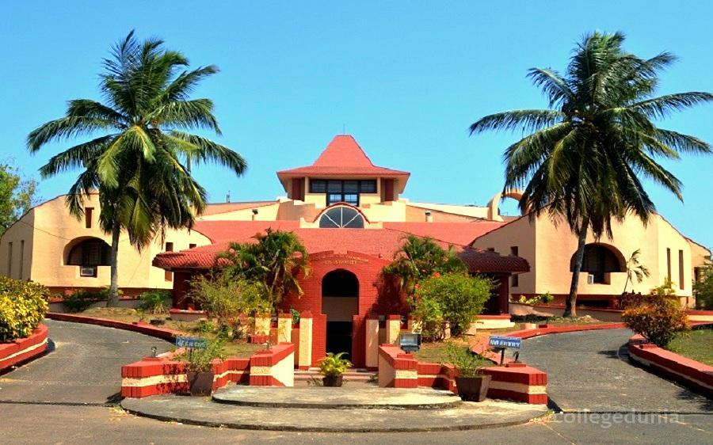
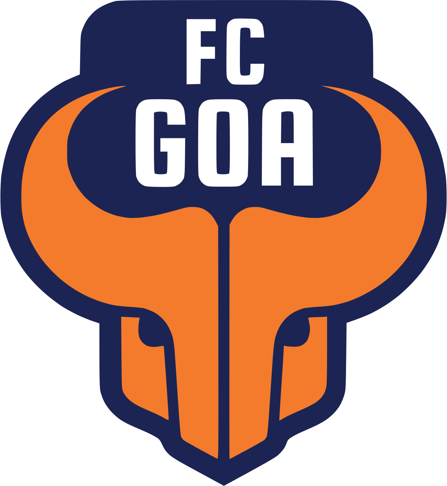

MEDIA AND COMMUNICATIONS:
Goa is served by almost all television channels available in India. Channels are received through cable in most parts of Goa.
The All India Radio is the only radio channel in the state that broadcasts on both FM and AM bands.
Major cellular service operators include Bharti Airtel, Vodafone Essar, Idea Cellular(merged with Vodafone in 2018), Telenor, Reliance Infocomm, Tata DoCoMo, BSNL CellOne and Jio.
Local publications include the English language O Heraldo (Goa's oldest, once a Portuguese language paper), The Gomantak Times and The Navhind Times. In addition to these, The Times of India and The Indian Express are also received from Mumbai and Bangalore in the urban areas. The Times of India has recently started publication from Goa itself, serving the local population news directly from the state capital.
EDUCATION:
Goa had India's earliest educational institutions built with European support. The Portuguese set up seminaries for religious education and parish schools for elementary education. Founded circa 1542 by Saint Francis Xavier, Saint Paul's College, Goa was a Jesuit school in Old Goa, which later became a college. St Paul's was once the main Jesuit institution in the whole of Asia.At present there are 64 colleges and 2,153 (approx.) schools in Goa. most of the schools in Goa are affiliated with the sate board of education There is only one university in goa currently.

SPORTS:
Normally other states are fond of cricket but association football is the most popular sport in Goa and is embedded in Goan culture as a result of the Portuguese influence. Its origins in the state are traced back to 1883 when the visiting Irish priest Fr. William Robert Lyons established the sport as part of a "Christian education".[97][98] On 22 December 1959 the Associação de Futebol de Goa was formed, which continues to administer the game in the state under the new name Goa Football Association.[97] Goa, along with West Bengal and Kerala[97] is the locus of football in India and is home to many football clubs in the national I-League.
